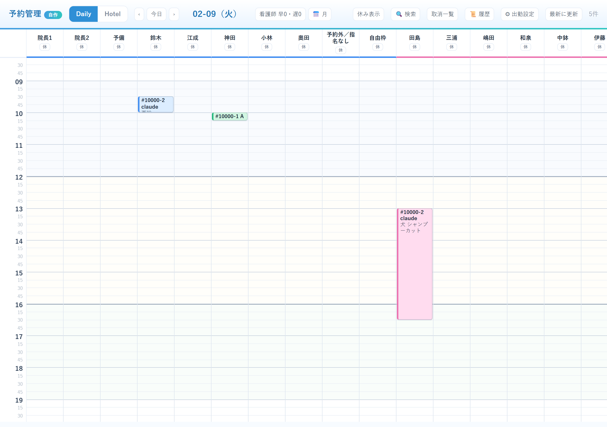
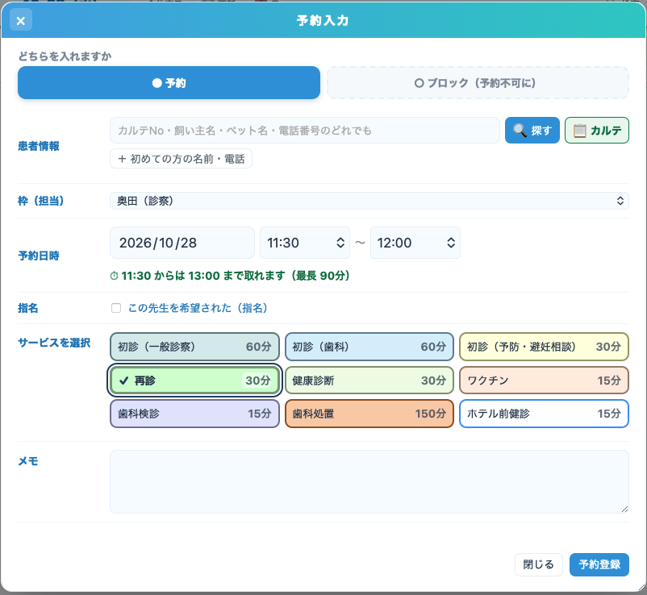
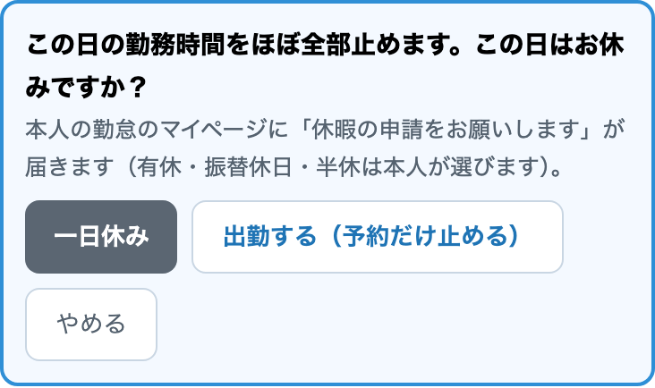
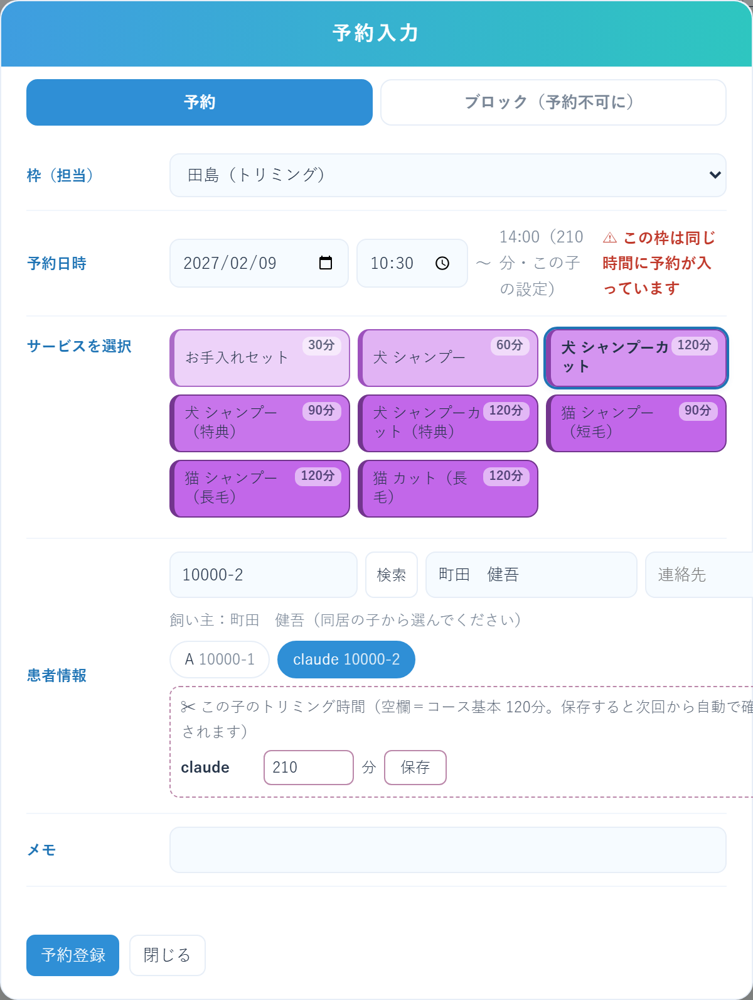
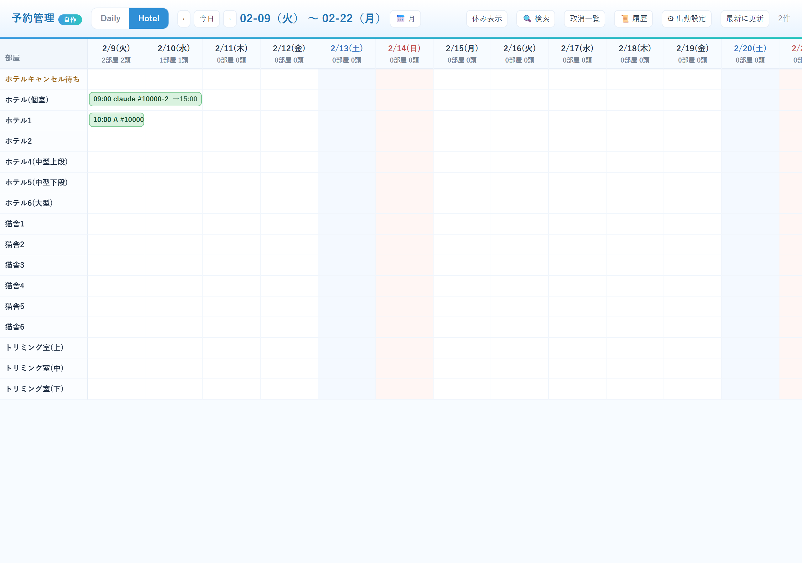
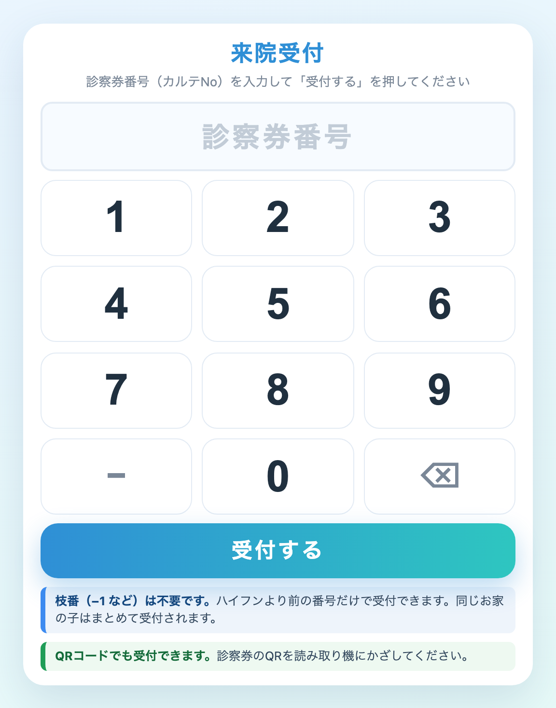
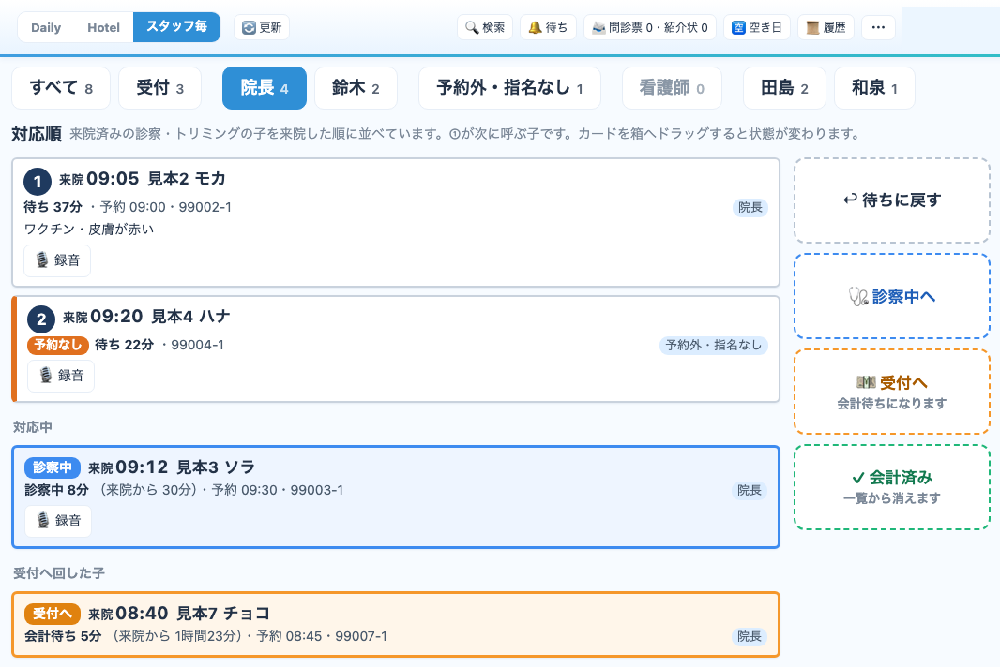
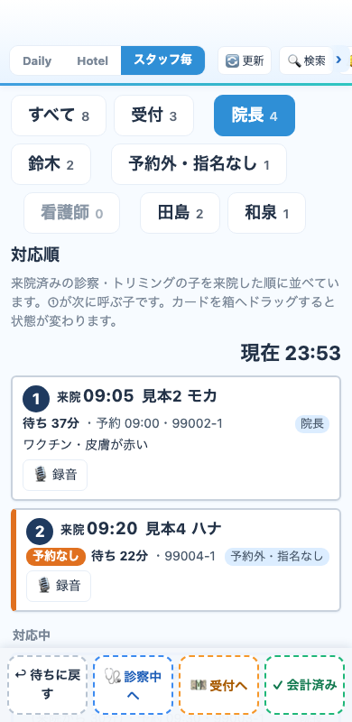
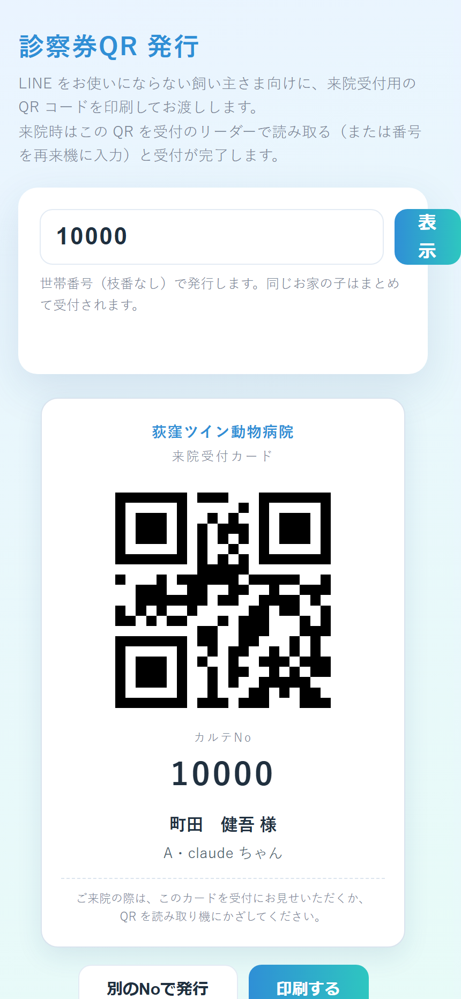
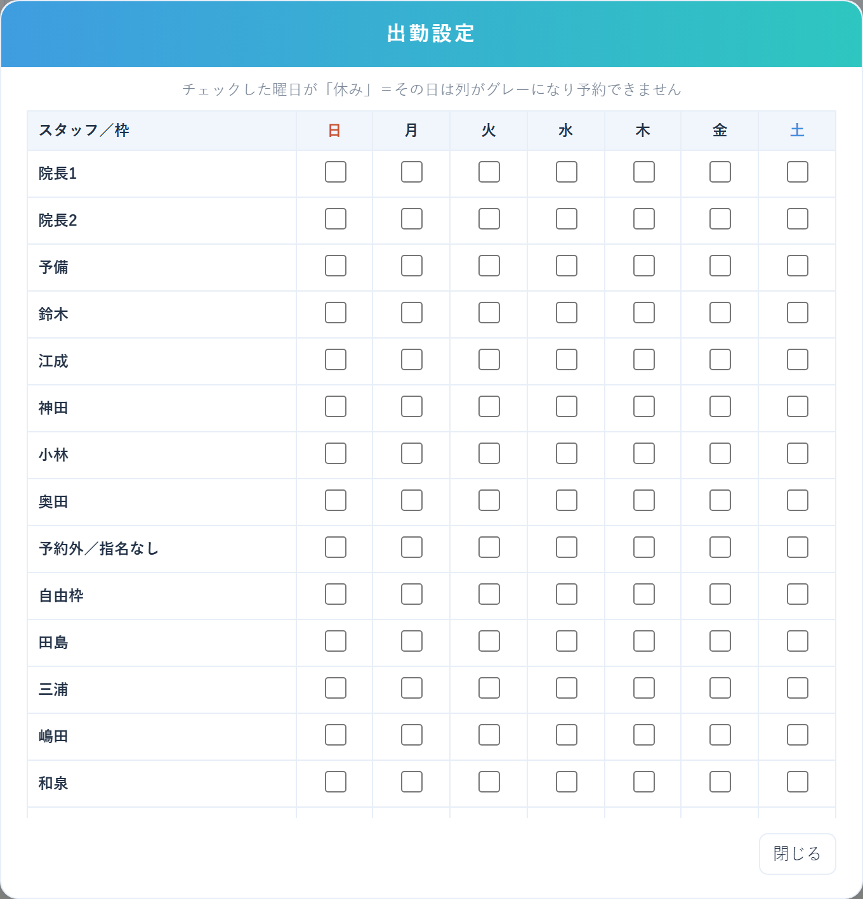

予約管理アプリ 使い方ガイド
← ガイド一覧へ 受付・スタッフ・獣医師・トリマー向け ｜ 2026年10月16日版 ｜ 荻窪ツイン動物病院
30秒まとめ
当院オリジナルの
予約システム です。
診察・トリミング・ペットホテル・一時預かり の予約をこの1画面で管理します。飼い主さまは
公式LINEからネット予約 ができ、来院時は
再来機（番号入力・QR）で自動受付 。予約革命の置き換えとして、休みの反映（勤怠から自動）や「この子ごとのトリミング時間」など、当院の運用に合わせて作られています。
スタッフが使う画面です
緑 = 自動（システム）
📌 切り替えのお知らせがあるまでは、予約の正式な登録先はこれまで通り予約革命です。 切り替え日以降はこのアプリだけ に入力してください（それまで、このカレンダーには予約革命の内容が1日3回自動で写されています）。
1. アプリを開く
初回だけパスコード を聞かれます（院内掲示・不明なら院長へ）。一度入れると同じ端末ではそのまま使えます。スマホでも操作できます（横スクロール対応）。スマホでは画面の下のバーの日付を押すと月のカレンダー が出ます。
2. 全体の流れ
2-1. 流れ
予約を入れる：スタッフはカレンダーの空いているマスから（→ 3章）、飼い主さまは公式LINEからネット予約（→ 10章）。
来院したら再来機（番号入力・QR）で自動受付。予約が「来院」になります（→ 6章）。
来院した子は「スタッフ毎」に来院順で並びます。スタッフは上から順に呼び、終わったら受付へ回します（→ 7章）。
お会計まで終わったら「完了」にします（→ 3章）。
2-2. 画面の全体像（カレンダーの見方・Daily）

▲ 日別カレンダー（画像はテストデータです）
見るところ 意味 列 担当ごと（獣医師 → トリマー の順）。院長1・院長2 ＝院長の2枠、予約外／指名なし ＝飛び込み・順番待ちのメモ置き場（同じ時間に何件でも入ります）、自由枠 ＝歯磨き指導・パピーパーティー等。 予約の色 メニューの分類ごとに色分け：予防=緑 歯科=青 診察=橙 手術=赤 トリミング=桃 など。🌐マーク＝飼い主さまがLINEから入れたネット予約 です。 休みのスタッフ 列ごと自動で消えます （勤怠システムから毎朝自動反映）。全員を見たい時は右上の「休み表示」 を押します。「看護師 早n・遅n」 その日の看護師の早番・遅番人数（勤怠から自動）。 日付の移動 ‹ › で前後の日、「今日」 で当日、「📅 月」 または日付タップでミニカレンダー。
🔍 右上のボタン：「検索」 ＝カルテNo・名前で予約を探す（本日／明日以降／過去に分けて表示・タップでその日へ）／「取消一覧」 ＝キャンセルの一覧（「過去30日をまとめて見る」でキャンセル待ち案内用の日またぎ一覧 も出せます）／「🔔 待ち」 ＝キャンセル待ち一覧（トリミングとペットホテルの両方 。詳しくは「10. キャンセル待ちのしくみ」へ）／「🈳 空き日」 ＝メニューと担当を選ぶと空いている日が一覧 で出ます（「いつ空いてる？」の電話にすぐ答えられます・カルテNoを入れるとその子の時間で計算）／「📜 履歴」 ＝予約操作の記録。
🔄 予約表は30秒ごとに自動で新しくなります（2026年9月8日〜）。 ほかのスタッフが入れた予約が、画面を触らなくても出てきます 。作業中に切り替わることはありません ：入力画面を開いている間／文字を入力している間／予約をつまんで動かしている間／画面を触った直後（10秒） は動きません。予約の中身が変わっていないときは、画面もそのままです。
↕↔ 時間の幅・列の幅を変える（2026年10月16日〜） 。変えた幅はその端末だけ に残ります（ほかの人の画面は変わりません）。PC・iPad ：左の時刻の列 をつかんで下へ引くと時間の幅が広がり、上へ引くと縮みます 。担当の名前の右の仕切り線 をつかんで左右に動かすと、その列の幅 が変わります（仕切り線をダブルクリックするとその列だけ元に戻ります）。スマホ ：☰ メニュー →「↕↔ 幅を変える」 で出る箱の −／＋ を押します（上の段＝縦の時間の幅、下の段＝横の列の幅）。箱は押しても閉じないので、表を見ながら続けて押せます。「↺ 幅を元に」 （スマホは箱の「↺ 元に戻す」）を押します。「⇔ 全体表示」 を押したときも元の幅に戻ります。
3. 予約を入れる・変更する
① 空いているマスをクリック（タップ） その担当・その時間で入力画面が開きます。
▼
② メニューを選ぶ → カルテNoで「検索」 飼い主名が自動で入り、同居の子がボタンで出ます 。診た子をタップ（複数選択OK＝2頭目から+15分/頭で終了時刻が自動で伸びます）。
▼
③ 空きチェックは自動 「✅ この枠は空いています」を確認して「予約登録」 。ダブルブッキング・院内全体の同時対応上限（4件）は自動で止まります。「11:15〜11:45 の『ブロック』と重なります」 のようにぶつかった相手の時刻と内容 が出ます（2026年9月8日〜）。押した場所が空に見えても、終わりの時刻が先の予定に届いていることがあります （例＝10:30に60分の診察を入れると11:30まで使うので、11:15のブロックにぶつかります）。

▲ 予約入力（画像はテストデータです）
操作 やり方 予約の変更・取消 予約をクリック →時間・担当・メニューを直して保存／「来院」「完了」「取消」ボタンで状態変更。状態の意味 予約 →来院 （受付済み）→完了 （お会計まで終了）。取消 ＝キャンセル。待 ＝ホテルの予約待ち（点線表示）。時間をふさぐ（ブロック） 入力画面上部の「ブロック（予約不可に）」 タブ。時間帯または1日（9:00〜19:00）をふさげます。すでに入っている予約はそのまま残ります （新規だけ入らなくなる）。解除はブロックをクリック。 ブロックで一日（午前・午後）を止めたとき 勤務時間をほぼ全部止めると、保存の前に「お休みですか？」 と聞かれます（下の「ブロックとお休み」）。 その日だけ休みにする 列の名前の下の「休」 ボタン。※毎週の休み・出勤は勤怠から自動なので、通常は触らなくてOKです。
ブロックとお休み（2026年10月10日〜）
自分の列（先生・トリマーの列）に
ブロック を入れて、
その日の勤務時間をほぼ全部 （または午前・午後をほぼ全部）止めると、保存の前にこう聞かれます。

▲ 保存の前に出る確認（一日を止めたとき）
ボタン どうなるか 一日休み （午前休・午後休）ブロックが保存され、本人の勤怠のマイページに「休暇の申請をお願いします」 が出ます。有休・振替休日・半休は本人が選んで申請します。 出勤する（予約だけ止める） 手術や会議で予約だけ止める日。止める理由（例：手術・会議）をメモ欄に書いてから、もう一度保存 してください。 やめる 保存せずに入力画面に戻ります。
止める理由は、これまでどおりメモ欄 に書きます。予約表で止めてあるのに勤怠に休暇の申請が無い日は、毎朝のチェックで永野さんに連絡 が届きます。
4. トリミング「この子の時間」（2026年7月〜）

▲ トリミングの予約画面に出る「✂ この子のトリミング時間」（画像はテストデータです）
基本はシャンプーコース60分・シャンプーカット120分 などコースごとの時間ですが、「この子は3時間半かかる」 のような子ごとの時間 を登録できます。トリミングのコースを選んで子を選ぶと「✂ この子のトリミング時間」欄 が出ます。
分数を入れて「保存」 → 次からその子の予約は自動でその長さ で枠が取られます。飼い主さまのLINEネット予約にも同じ長さが効きます （「3時間の子が2時間半で入ってしまう」がなくなります）。空欄のまま ＝コースの基本時間。パピーなどまだ時間が定まらない子は空欄でOK。今回だけ長くしたい （毛玉など）→ 数字を変えて保存せずに そのまま予約登録すると、その回だけ長く取れます。やめたい時は欄を空にして「保存」 で基本に戻ります。
✂ 時間の目安はこれまで通りトリマーの皆さんの判断が正 です。初回カルテを書いた時などに、この欄に登録しておくと次回から自動になります。
ネット予約の時間は「詰めた候補」だけが出ます（2026年8月〜）
飼い主さまに提示される開始時刻は「勤務開始／前の予約の終わり＋30分／13:00／閉店から逆算」だけ 。半端な空き時間ができない仕組みです。それ以外の時間を希望される場合は電話案内になります。
予約と予約の間の30分は自動で確保 されます（昼食・洗濯・ホテル業務用。手でブロックを入れる必要はありません）。予約の開始時刻はトリマーごとの勤務開始時間 に合わせられます（KING OF TIMEに始業時刻が入っていれば自動反映・未入力の日は9:00扱い）。
指名 ＝ネットからトリマーを指名できます（指名料500円 ・予約に自動で記載されるので会計時に加算してください）。「指名なし（担当おまかせ）」は無料で、空いているトリマーに自動で割り当てられます。サロン初めての子 ＝自動でカウンセリング30分 が予約時間の前に追加され、事前アンケート （前のサロンからの変更理由・前回トリミング日・毛玉・苦手な作業・希望カット）がLINEで届きます。回答は予約詳細の📝で見られます。電話予約の方にも「LINEメニュー→予約」から同じアンケートのご案内ができます。初めての子は「子ごと」に見ます （2026年10月〜）＝いつもの子と一緒の予約でも、初めての子がいればカウンセリング30分が付きます（1件に1回）。お手入れセットはカウンセリングなし （初めての子でも30分のまま）。トリミングの新規受付を止めているとき ＝初めての方のネット予約はお断りします。ただし、同じ診察券番号のご家族がトリミングを使ったことがあれば、初めての子も受けます （LINEの「初めて来院する子」から登録した子も同じ）。お手入れセットは新規の方も受けます 。ご家族も初めての方はこれまでどおりお断りです。LINEでは、初めての子を選んだ時点で「混み合っているため、はじめての子のシャンプー・カットは受付を停止しています」と出て、メニューはお手入れセットだけになります（2026年10月16日〜・日付まで選んでから断られることはありません）。2日前〜当日のキャンセルはネット不可 （キャンセル料のため『電話対応のみ』と表示されます）。
5. ペットホテル・一時預かり（Hotel タブ）

▲ Hotelタブ＝日付×部屋の2週間表（画像はテストデータです）
操作・見方 内容 新しく入れる 部屋の行の空きマスをクリック →宿泊 （チェックイン〜アウト・既定は翌日15:00）か一時預かり（時間制） を選択→同居の子を選んで登録（複数選択で頭数分まとめて 入ります）。 バーの見方 「9:00 名前 →15:00」＝イン時刻とアウト時刻。日をまたぐ宿泊は横に伸びます。日付の下に「n部屋 m頭・空k」 ＝その日の稼働数と空き部屋数 、その下に「預かり n/上限」 ＝一時預かりの件数（上限は⚙出勤設定で変更・超えると赤字になり登録時に確認が出ます）。 部屋のルール 同じお家の子だけ同室OK （別のお家は自動でブロックされます）。時間がかぶらなければ同じ部屋を1日で使い回せます。予約待ち 登録時に「予約待ち」にチェック→点線＋「待」 で表示（部屋は占有しません）。専用のキャンセル待ち行 もあります。 変更 バーをクリック→イン/アウト日時・部屋を変更。
🏨 ホテル・一時預かりの予約受付はこれまで通りお電話・受付のみ です（ネット予約は準備が整ってから）。年末年始はホテルのみ営業＝休診日でもホテル行は入力できます。
5-1. 部屋の一覧と大きさ（2026年8月21日 更新）
📌 部屋の名前が変わりました。 「ホテル1〜6」という呼び方をやめて、実際に使っている呼び方に合わせました。使われていなかった「ホテル3」は一覧から外しています。
部屋 大きさ（横×奥行×高さ） おもな用途 個室 135×247cm（お部屋の広さ） 同じお家の子をまとめてお預かりできます（小型3頭・中型2頭・大型1頭まで） 犬舎小型1／犬舎小型2 60×70×57cm 小型犬 犬舎中型上段 78×70×57 cm 中型犬（高さが足りないので大型犬は入りません ） 犬舎中型下段 78×70×78 cm 中型犬・大型犬も可 犬舎大型 120×70×78cm 大型犬・超大型犬。真ん中で仕切ると小型犬2頭 猫舎1〜6 57×70×57cm 猫 トリミング室上段／中段／下段 65×60×60cm 小型犬（ホテル兼用）
📏 大きさは画面には表示されていません 。飼い主さまに「うちの子は入りますか」と聞かれた時の参考にしてください。
5-2. 部屋の決め方（2026年8月21日〜）
🙋 2026年9月6日から、飼い主さまのネット予約でも部屋が自動で決まるようになりました。 下のきまりはスタッフが手で入れるときの目安 です。ネット予約は同じきまりをアプリが読んで 自動で割り当てます。
対象 探す順番・きまり 小型犬 ① 犬舎小型1・2 ② トリミング室 上段・中段・下段 ③ 中型犬の予約が入っていなければ 犬舎中型上段・下段 ④ 大型犬の予約が入っていなければ 犬舎大型を仕切って2頭 中型犬 犬舎中型上段 → 犬舎中型下段 →（どうしても空きがなければ）犬舎大型 大型犬・超大型犬 犬舎大型 か個室 。※超大型犬は犬舎中型には入りません 。大型犬は犬舎中型下段 なら入ります（上段は不可）同じお家の大型犬2頭 犬舎大型＋犬舎中型下段 の2部屋でお預かりできます猫 猫舎1〜6
気をつけること 内容 犬舎大型は最後まで空ける 大型犬が泊まれる場所は犬舎大型しかありません 。中型犬を入れる時も、まず中型上段・下段から埋めてください。 猫舎に犬を入れるのは例外 キャンセル待ちの状況を見て、小さくて吠えない子 に限り、空いている猫舎にお入れすることがあります。必ず確認してから にしてください。ネット予約では猫舎に犬は入りません （2026年9月6日〜。混み合った日に自動で猫舎まで降りてしまう不具合があったため、「人が見てから決める部屋」 として自動割り当てから外しました）。スタッフが予約表から手で入れるのは今までどおり できます。犬舎大型を仕切って小型犬を入れる場合も同じ扱いです。 個室のご案内 個室は料金が高い ので、それでも希望される方から お取りします。ほかに空きがない時は、別料金がかかることをお伝えしたうえで ご案内してください。 ⚠ 個室に入れられない子 個室を壊してしまう子がいます。 ペットメモ・顧客メモに書かれているので、個室にする前に必ずメモを確認 してください。
⚖️ サイズの目安 ＝〜6kg 小型犬・猫／〜18kg 中型犬／〜35kg 大型犬／35kg〜 超大型犬。体重の記録がなければ、犬種の平均体重 で判断してください。
5-3. 飼い主さまのネット予約では、こう見えています（2026年9月〜）
できごと 飼い主さまの画面 お預かり・お迎えの時間 最初から10:00 イン・17:00 アウト が入っています。変えたい方だけ「別の時間にする」 を押すと 9時〜18時（1時間刻み）が出ます。30分刻みは選べません （お電話・受付では今までどおりお受けできます）。 はじめてお泊まりする子 お子さんを選んだ時点で「ホテル前健診が必要です」 と出ます。日程を選ぶ前にお伝えする 形にしてあります。前健診の時間は、お預かり開始日を決めたあとに選んでいただきます（お預かり当日の朝でも可）。 年末年始（12/30〜1/3） 選べる時刻が限られます。12/31〜1/3 は 9時・10時・17時・18時 、12/30 は午前12時まで と 17時・18時 。理由の一文も画面に出ます。15時のお迎えはネットからは選べません のでご注意ください（お電話・受付ではお受けできます）。 お迎えの日に次の子 お迎えがある日でも、その日から次のお預かりを受けられます （2026年9月6日〜）。以前はネットからだと「満室」になっていました。満室のとき 「この期間は個室（1泊 +2,200円・税込）のみご案内できます 」と金額を明示して ご案内します。複数頭のときは「2頭のうち1頭が個室になります 」という形も出ます。勝手に個室にはしません。 超大型犬 1頭なら個室も選べます 。2頭の場合は犬舎大型＋個室 のような組み合わせでお受けできます。
💡 ネット予約が断られた理由は、飼い主さまの画面にそのまま文章で出ます。「なぜ取れなかったか」を聞かれたら、同じ日程・同じ大きさで予約表を見ていただく と、どの部屋が埋まっているか分かります。
6. 来院受付（再来機）

▲ 受付ディスプレイの「来院受付」画面
受付のディスプレイに常時表示しておく画面です（/checkin ・パスコード不要）。飼い主さまが自分で受付できます。
診察券番号を入力 して「受付する」、またはQRコードをリーダーにかざす （LINEの会員証QR・紙のQRカードどちらもOK。今までのLINEのQRがそのまま使えます ）。同じお家の子はまとめて受付 されます。受付できるのは予約時刻の前後2時間以内 の予約（早すぎると「2時間前から受付できます」と案内されます）。
受付すると予約が「来院」 になり、電子カルテの受付ボードにも自動で載ります 。
7. スタッフ毎（対応順）（2026年10月15日〜）

▲ 上の「スタッフ毎」を押し、自分の名前を選んだところ（説明用の架空データです）
自分がこれから対応する子を、上から順に こなすための画面です。来院した診察・トリミングの子だけが出ます。今日の予約全体は Daily で見てください。
上の名前のボタン で自分を選びます。次に開いたときも、同じ名前が選ばれています。
まだ案内していない子が、来院した順に ①②③ と並びます。①が次に呼ぶ子 です。来院した時刻と、待っている時間が出ます。
呼んだら、カードを右の箱 （スマホでは画面の下の箱）へドラッグします。iPad とスマホでは、カードを少し長押ししてから動かします。
診察が終わったら「受付へ」 へドラッグします。会計待ちになり、受付の画面に移ります。
箱 ドラッグすると ↩ 待ちに戻す 「来院」に戻り、待ちの列に入ります。 診察中へ 「診察中」になります。トリミングの子は「トリミング中」になります。 💴 受付へ 「会計待ち」になります。 ✓ 会計済み 「会計済み」になり、一覧から消えます。記録は残ります。
カードの枠 意味 灰色 待っている子（まだ案内していない） 青 診察中・トリミング中 橙 受付へ回した子（会計待ち） 紫の点線 会計保留 左に橙の太線 予約なしで来院した子

▲ スマホでは箱が画面の下に並びます（説明用の架空データです）
7-1. 受付の方は「受付」ボタン
名前のボタンの中の「受付」 を押すと、全員の会計待ちが出ます。会計待ちになってから長い順に ①② と並ぶので、①から会計してください。会計保留の子はその下に出ます。
獣医師の名前を選ぶと、指名なし・予約なしで来院した診察の子も一緒に出ます。🎙録音のボタンはこれまでどおりカードにあります。カードの「📋 カルテ」 でその子の電子カルテが開きます。
8. 診察券QRの発行（LINEをお使いでない方向け）

▲ 診察券QR発行（画像はテストデータです）
/qr （受付スタッフ用）でカルテNoを入れて「表示」→来院受付カード が出るので「印刷する」でお渡しします。世帯番号で発行するので、同じお家の子はこの1枚でまとめて受付できます。※LINEをお使いの方は発行不要です（LINEの会員証QRが診察券代わり）。
9. 設定（⚙ 出勤設定）

▲ ⚙ 出勤設定（毎週の休み・休診日・ホテルの部屋）
項目 内容 毎週の休み スタッフ×曜日のチェック。ただし通常は勤怠システムから毎朝自動で反映される方が正 で、手動チェックは翌朝上書きされます。基本は触らなくてOK。 休診日 特定日・毎年（年末年始）の休診を登録。休診日はカレンダーがグレーになり予約できません（ホテルは除く）。 ホテルの部屋 部屋ごとの使用可否のON/OFF（故障・清掃中など）。
10. 飼い主さまのLINE予約（参考）
飼い主さまは公式LINEのメニュー から自分で予約できます。スタッフへの問い合わせが来た時のために、ルールを知っておいてください。
ルール 内容 予約できる期間 当日OK（開始1時間前まで） 〜180日先まで。直前は「お電話で」と案内されます。トリミングは「詰めた候補時刻」だけが提示 され、それ以外は「お電話で」と案内されます。トリミングの指名・キャンセル トリマーの指名可（指名料500円・画面に表示） ／「指名なし（担当おまかせ）」は無料。2日前〜当日のキャンセルはネット不可 （『キャンセル料金が発生する為、電話対応のみ』表示）。空きゼロの日は「🔔 キャンセル待ちに登録」 ができ、キャンセルが出ると登録順に自動でLINE案内が届きます（決まった時間内にご予約がなければ次の方へ ＝トリミングは予約日まで3日以内の枠は3時間・それより先は12時間。ホテルも満室のとき同じように登録できます）。飼い主さまは「ご予約の確認」で自分のキャンセル待ちを見る・取り下げる ことができます。 ネットで予約できるメニュー 診察（再診・初診）・ワクチン・狂犬病・避妊相談・歯科（初診/検診）・トリミング（お手入れ/シャンプー/シャンプーカット）など。健診・フィラリア・ホテル・猫トリミングは電話/受付のみ 。 確認・キャンセル LINEの「予約の確認」から。ネット予約分のみ、開始1時間前まで 自分でキャンセルできます（それ以外は「お電話で」）。 通知 予約完了・キャンセル完了・前日夕方のリマインダー がLINEに届きます。 はじめての方の2頭以上（2026年10月〜） LINEで2頭まとめて予約すると、問診票を1頭ずつ 書いていただきます（1頭目を送ると「続けて ○○ ちゃんの問診票を書く」が出ます）。受付の「新患の登録待ち」では、どの子のカードにも予約が出て、問診票はその子の分だけ が出ます。1枚しか届いていないと予約カードは「問診票まだ」のままです（残りは、LINE連携のあとマイページから・または院内iPadで書いていただけます）。 いたずら防止 初めての子は1件まで・1頭あたり診察2件/トリミング3件まで等の上限があります。上限の方は「お電話にて」と案内されます。
11. キャンセル待ちのしくみ（トリミング・ホテル／2026年9月〜）
基本の流れ（自動） キャンセルが出ると、条件（日・期間・担当・サイズ）の合ういちばん先に登録した方 へ自動でLINE案内が届きます。トリミングは、もうその期間にご予約がある方は自動で片付けて飛ばし 、その方のメニュー・担当ではこの空きに入れない方にはご案内しません （2026年10月〜）。LINE の方は、決まった時間内にご予約がなければ自動で「見送り」になり、次の方へ案内が移ります （次の方の条件でもう空きが無ければそこで終了）。トリミングのお電話の方は、時間が過ぎても自動では移りません （2026年10月15日〜・下の「お電話のあと」）。決まった時間＝トリミング・ホテルとも予約日まで3日以内の枠は3時間・それより先の枠は12時間 です（2026年10月13日〜ホテルもそろえました）。次の方へ移す自動の見送りは9:00〜20:30の間だけ動きます。
ご案内中は枠を押さえます（トリミング・2026年10月14日〜） トリミングのキャンセルで待ちの方へご案内すると、予約表のその枠に「キャンセル待ち連絡中」のブロック が自動で入ります。ご案内中のご本人は、LINE でも受付で診察券番号を入れても そのまま予約でき、予約が入るとブロックは自動で消えます。ほかの方は、その枠にも前後30分の余白 にも入れません（ネット予約にも空きとして出ません）。次の方へ移るとブロックは次の方の分に付け替わり、ご案内できる方がいなくなると自動で消えて空きに戻ります。診察券番号の無い方（はじめての方）をその枠に入れるとき は、このブロックを消してから入れてください。ブロックには取消・削除しかできません。ホテルの待ちは押さえません。メニューの入っていない待ちの方へご案内したときも、取り消された枠そのものを押さえます（前後の余白はなし・2026年10月15日〜）。
トリマーへのお知らせ（2026年10月14日〜 お電話が必要なときだけ） LINE ではご予約まで進めない方の番が来たときだけ、その日に出勤しているトリマー全員に LINE WORKS で「お電話をお願いします」 が届きます（LINE でつながっていない方・LINE のご案内が届かなかった方・ホテルで2頭以上の個室の相談が要る方・お部屋の大きさが分からない子）。キャンセルが出たこと・LINE でご案内したこと・ご案内が終わったことは届きません（予約表と「🔔 待ち」一覧で見られます）。トリマー全員がお休みの日は、次の出勤日の朝に届きます。届くのは 8:00〜19:00 だけ です。夜に出たキャンセルは、順番と予約表の押さえはその時に決まり、お知らせは翌朝8時 に届きます（2026年10月15日〜）。院長からのお願い： ホテル・トリミング・診察のお電話では、空きをお伝えするのはよいですが、ご予約は飼い主さんご自身の LINE で取っていただくようご案内してください（「取ったはずが入っていない」を無くし、電話の対応を減らすため）。
ホテルの自動のご案内（2026年10月13日〜） ホテル画面の「ホテルキャンセル待ち」の行に入れた方にも 、キャンセルで空きが出たら自動でご案内します（同じお家・同じ期間の行は1組として扱います）。その子のお部屋の大きさ は、猫は猫、犬は犬種の表（60犬種・院長確認済み）を最優先 、表に無い犬種は直近の体重（小型の部屋は10kg未満 ・中型は18kgまで・大型は35kgまで）で決め、期間まるごと部屋が空いている方だけ にご案内します。ふつうの部屋が満室で個室だけ 空いたときは、1頭の方には「個室（1泊 +2,200円）なら空き」とLINEでご案内し、飼い主さまがご予約の画面で個室を選びます。2頭以上で個室になる方・大きさが分からない子 は「お電話をお願いします」で届くので、部屋を確かめてからご連絡ください。犬舎のみの子 は個室ではご案内しません。はじめてホテルを使う子で前健診の空きが無い ときは、飼い主さまにLINEで「当院へお電話を」とお願いします。ご案内した方は「🔔 待ち」一覧に「ホテル画面の待ちの行から」 と出ます。ご予約になったら、今までどおり待ちの行を部屋へ移してください（自動で「ご予約成立」になります）。🔔 待ち一覧は「#番号 飼い主の姓 ペット名」で出ます（LINE から登録された方も電子カルテの名前で出ます）。トリミングの枠がもう始まっている時間に取り消されたときは、キャンセル待ちの方へご案内しません 。お部屋の大きさと料金の区分は別 です：LINE のご予約のメモの「部屋 小型犬」は部屋の大きさで、料金は今までどおり体重の区分（小型・猫は6kgまで）で会計してください。
「🔔 待ち」一覧の見方（2026年10月14日に作り直し） 上の「トリミング｜ホテル」 で切り替えます（件数つき・前回の選択を覚えます）。一覧は上から「☎ お電話が必要」 （赤枠・電話番号を押すとそのまま発信）→「💬 ご案内中」 （「◯/◯ ◯:◯◯までにご予約がなければ次の方へ」の期限つき）→「⏳ 順番待ち」 （1番・2番…＝次に案内が行くのは1番の方）の順です。順番待ちは希望の月ごとにたたんであり 、月の横に件数と番号が出ます。月を押すと開きます。ホテルの順番待ちには、ホテル画面の「ホテルキャンセル待ち」の行に入れた方 も、ご案内する順に出ます。「ホテル画面で開く」 を押すとその行に移ります（片付けはホテル画面の行で行います）。「終わった方」（見送り・ご予約成立）と「ご案内のしくみ」はたたんであり、押すと開きます。ホテルの LINE を送った直後は「LINE送信を確認中」 と出ます（届いたと確かめるまで・長いときは10分ほど）。この間に操作すると「少し待ってから」と出るので、時間をおいて押してください。LINE が誰にも届かなかったときは、10〜15分後にトリマーへ「お電話をお願いします」が届きます。
12月のトリミングは LINE からキャンセル待ちに登録できます（2026年10月16日〜） 12月のトリミングは、ネット予約は閉じたままです。LINE の予約カレンダーでは12月の日がオレンジ で出て、押すと「この日のキャンセル待ちに登録する」 へ進めます。お電話でキャンセル待ちを頼まれたら、LINE からも登録できることをお伝えください。キャンセルが出て LINE でご案内した方だけは、その日の枠を LINE から予約できます （ほかの方は取れません）。予約が入るとキャンセル待ちは自動で「ご予約成立」になります。「いま、この日のキャンセル待ちは○組です」 、登録すると「この日をお待ちの方の中で○組目（目安）」 と出ます。お電話で受けた待ちの方も数に入ります。メニューや空いた時間によって順番は前後します。休診日・その日にお休みの担当を指名したとき・メニューが勤務時間に入らない日・2頭以上をまとめて選んだときは、LINE からは登録できません（2頭以上はお電話で受けてください）。
お電話で受けたら 一覧の下の「＋ お電話で受けたキャンセル待ちを登録する」 に入力します（ネットの登録と同じ列に、受けた順で並びます）。トリミングはメニューを必ず選んでください （担当の指名は選ばなくても登録できます・2026年10月15日〜）。メニューが入っていない待ちには一覧に赤い「メニュー未入力」 が出るので、その横の欄で選んでください。ホテルの場合は「🏨 ペットホテル」にチェックしてサイズと帰りの日まで 入れてください。LINE連携の無い方の番が来ると「☎ お電話が必要」 に出ます。トリミング・ホテルとも、トリマーへの LINE WORKS のお知らせに「お電話をお願いします」 と出ます（2026年10月13日〜ホテルも同じ。院長の Telegram には届きません）。お電話でご案内してください。ホテルのお電話の方の待ち時間は、このお知らせがトリマーに届いた時刻から数えます。
お電話のあと（トリミングは 2026年10月15日〜） お電話をしたら、その方の行の「📞 出なかった」 か「📞 つながった」 を押してください。押した時刻が行に並ぶので（例：10/15 09:10 出なかった・16:30 出なかった）、ほかの人も連絡の様子が分かります。トリミングのお電話の方は、「⏭ 次の方へ」を押すまで次の方へは回りません （予約表の「キャンセル待ち連絡中」もそれまで残ります）。「今回は見送り」 と言われたとき、何度かけてもつながらず次の方へ回すと決めたときに「⏭ 次の方へ」 を押してください。お知らせが届いた日の18時 になっても「出なかった」「つながった」「次の方へ」のどれも押されていないと、トリマーに「連絡して、キャンセル待ちの作業を進めてください」 がもう一度届きます（1回だけ・18時を過ぎてから届いた分は翌日の18時）。ご予約が入ったら「✓ 済み」 を押します。終わった行は「✓ 片付け」 で消します。
💡 飼い主さまの側では：LINEの「ご予約の確認」に「🔔 キャンセル待ち中」 の欄が出て、自分がいつ・どの子で・どんな条件で待っているかの確認と取り下げ ができます。案内のLINEにも「◯時間以内（本日 20:39まで）にご予約がない場合は次の方へ」と、その枠の待ち時間（3時間または12時間）と締め切りの時刻 が書かれています（2026年10月13日〜）。LINE のホテル予約では、猫・犬種の表にある犬種・1年以内に当院で体重を測った犬はお部屋の大きさを聞かれず に決まります（大きく変わったときは電話で、と画面に出ます）。
12. 「ここが不便」を送る
💬 使いにくいと感じたら、その場で送ってください。 画面の上のほうにある 「💬 ここが不便」 ボタンから送れます。院長にすぐ届きます。
項目 内容 どんなことを書く？ 短くて構いません。 「使いにくい」「こうしてほしい」「うまく動かない」——どれでもかまいません。ホテルの画面で、部屋を後から変えるのに手間がかかる 状況の説明は不要です どの画面から送ったかは自動で付きます。 「ホテルの画面で」などと書かなくても、こちらで分かります。お名前 任意です。 入れていただくと、直した時にご連絡できます。送ったあと 院長に通知が届きます。直せるものはすぐ直します。 すぐに直せないものも、記録として残ります。
🙏 「こんな細かいこと言っていいのかな」と思うことこそ送ってください。 毎日使う人しか気づけないことがあります。実際、これまでの改善のほとんどは現場からの声がきっかけです。
13. よくある質問・困ったとき
質問 答え パスコードを聞かれた 初回のみです。院内掲示のパスコードを入力（不明なら院長へ）。 予約が入らない（赤い警告） 「同じ時間に予約が入っています」＝その担当の重複／「同時対応上限（4件）」＝院内全体の上限。時間か担当を変えてください。 先生の列が見当たらない その日お休みだと列ごと隠れています。「休み表示」 を押すと出ます。 間違えて取り消した 「取消一覧」 で確認できます。同じ内容でもう一度入れ直してください（操作の記録は「📜 履歴」に残っています）。この子の電子カルテを見たい 予約を開いて患者欄の「📋 カルテ」 （受付タブはカードの「📋 カルテ」）。電子カルテが別のタブで開き、その子が出ます。最初の1回だけ電子カルテのパスコード（予約システムと同じ）を聞かれ、2回目からは同じタブで開きます。 表が詰まって読みにくい／1画面に入らない PC・iPad は時刻の列を上下 ・担当の仕切り線を左右 に動かして幅を変えられます。スマホは☰ →「↕↔ 幅を変える」 。戻すときは「↺ 幅を元に」（→ 2-2）。 予約を探したい 「🔍 検索」 にカルテNoか名前を入れると、本日／明日以降／過去に分けて出ます。行をタップでその日へ移動。ネット予約はどれ？ 予約に🌐 マークが付いています。開くと「経路：ネット予約」と出ます。飼い主さまがLINEでキャンセルするとメモに残ります。 トリミングの枠が短い/長い その子の「✂ この子のトリミング時間」 を登録・修正してください（→ 4章）。 使いにくい・こうしてほしい 画面の 「💬 ここが不便」 ボタンから送ってください（→ 12章）。院長にすぐ届きます。
⚠ 患者情報の取り扱い： この画面には飼い主さま・ペットのお名前が表示されます。院外で画面を開いたまま席を離れない・画面の写真をSNS等に載せない でください。（このガイドの画像はすべてテストデータで、実在の患者情報は含みません）
荻窪ツイン動物病院 ｜ 予約管理アプリ 使い方ガイド（2026年10月16日版）